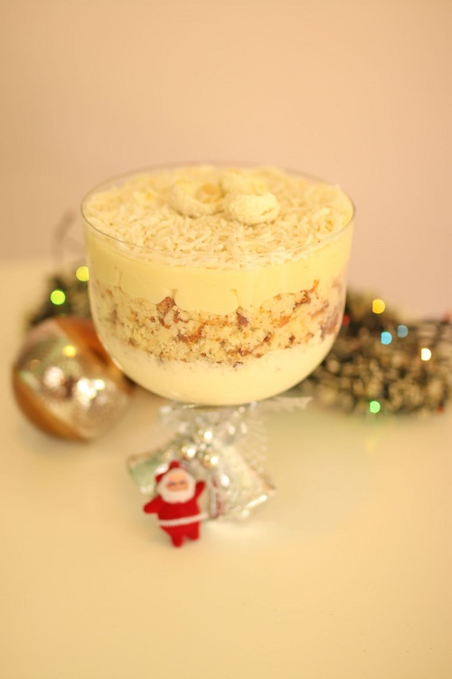

Rice Custard
- 1 cup cooked rice
- 1/4 sugar
- 3 eggs
- 2 egg yolks
- 1 1/2 cups pf milk or half and half
- raisins if desired
Preheat oven to 325 degrees F.Whisk together the milk eggs and sugar. Add cooked rice and gently stir in the rice, don't smush the rice. Pour the custard into a 9x8 pan and cook for 20 min. After the first 20 min check on the custard every ten min. Cook till the outsides are firm and the middle still has a slight movement. No one wants dry custard.